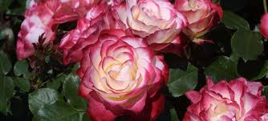

Rosenrot und Schneeweißchen
Rosen und Märchen
Rosen und Märchen

Das Wesen der Rose findet sich in der feinen Beobachtung der natürlichen Gestalt und Ausprägung der
Pflanze.
Der wilde Rosenbusch wächst an Waldsäumen, am Feldrand, in Hecken und Gebüsch und im Gebirge bis über die Waldgrenze hinaus.
Am häufigsten sind die Hundsrosen(das kommt nicht von Hund, sondern von hundsgemein), sie sind überall anzutreffen.
Manche Rosenbüsche werden nach ihrem Lieblingsplatz benannt, die Heckenrosen, die Feld- oder Alpenrose.
Andere wiederum nach ihrem Wachstum, wie die Busch -Kriech- oder Kletterrose.
Manche der wilden Rosensträucher werden nach ihrem Duft benannt, wie die Zimt-, Wein-, Essig- oder die Apfelrose.
Sie wachsen kraftvoll und impulsiv, bogenförmig schießen ihre Triebe hinaus und greifen weit in ihre Umgebung hinein.
Die Rosenhecke hat kein Zentrum wie der Stamm der Bäume, ein verzweigter Stengel oder die vorgegebene Form eines Busches.
Als gut verzweigter, stacheliger und dicht belaubter Strauch ist sie ein ausgezeichnetes Vogelschutzgehölz, sogar die
Haselmaus baut sich ihr Nest zwischen die Äste.
Für andere Wildtiere, womögliche solche die ihre wohlschmeckenden Blüten und
Triebe fressen wollten, ein undurchdringlicher Schutzwall.
Ihre Blüten lassen sich von Tag zu Tag beobachten, wie sie als Knospe von den 5 Blättern ihres Kelches fest umschlossen gehalten werden und schon im unentfalteten Zustand von besonderer Schönheit sind. Wenn sie herausbricht, im Juni, sind ihre Blütenblätter weiß, zartrosa bishin zum tiefen violett. Je mehr sich ihre Blüten öffnen, wenn die Sonne im Juni ihren höchsten Stand erreicht hat, geht der Rosenbusch in der Fülle der Blühens auf. Es ist ein sich Weiten zur Sonne hin, eine Gebärde wie eine offene Hingabe und sie bietet ihre vielen leuchtend gelben Staubgefäße dar. Ihr Duft, der sich vorallem bei warmer und feuchter Luft enfaltet lockt so, dass sie von zahlreichen Insekten besucht werden. Schmetterlinge, Käfer, Wanzen und Wespenarten. Für die Bienen sind die Wildrosen als Hauptpollenspender im Frühsommer unentbehrlich.
Unter der Blüte, im Stengel ist eine kleine Höhle wie ein Krug, hier befinden sich eine ganze Anzahl an Fruchtknoten
aus denen im Herbst die Hagebutten entstehen. Wildrosen sind im Spätsommer,
wenn sich die Hagebutten färben, immer noch grün belaubt. Die orangen, roten, es gibt auch schwarzen Hagebutten,
bleiben bei den meisten Arten bis in den Winter am Strauch.
Zahlreiche Vogel- und Säugetierarten schätzen die Früchte.
Die Hagebutte Hag Hecke - Butte Butz, Butzen (Verdickung)ist eine Sammelfrucht, die viele kleine Nüsschen/Steinchen enthält.
Die Nüsschen der Hagebutte sind mit feinen, widerhakenbestückten Härchen bedeckt, die bei Hautkontakt Juckreiz hervorrufen.
Daher sollten die Nüsschen nicht mitgegessen oder -verarbeitet werden.
Vor allem Kinder nutzen sie gelegentlich zum Herstellen von Juckpulver.
Die Hagebutten sind säuerlich süß und stark und können zur Bereitung von Tees und einer schmackhaften Marmelade genutzt werden. Die widerstandsfähigen Früchte sind eine leicht zu findende, vitaminreiche Nahrung für viele heimische Vögel. Amsel Drossel Fink und Star, Gartenrotschwanz, Gimpel und das Rotkelchen Die symbolische Bedeutung der Rose ist tief verwurzelt in unsere Kultur.
So viele Arten der Rose, von der einfachen Heckenrose bishin zur stolzen Edelrose, soviele Ausprägungen gibt es auch in ihrer
Symbolik.
Die Rose wird als die Königin der Blumen geehrt. Wohl Ihrer Schönheit wegen. Dass sie auch einen hohen Nutz- und Heilwert hat ist ein zusätzliches Geschenk. Im Gegensatz zu ihren offenen und üppigen Blüten stehen ihre Dornen, die wie kleine Schwerter den Stiel bewaffnen, und wie ein wilder Stacheldrahtzaun den Eindringling ihrer Hecke empfindlich verletzen. So vereint sie Schönheit und Schmerz, Liebreiz und Leid, und ist somit ein Symbol für die Liebe.
Sie blühte schon in Babylon, den hängenden Gärten der Königin Semiramis, das geheimnisvollste und Siebente der antiken Weltwunder. Rosen lagen auf dem Altar der babylonischen Göttin Ischtar, der agyptischen Göttin Isis und der Göttin Aphrodite. Auch die germanische Göttin Freya, Frigga hat ihre heiligen Stätten, mit einer Heckenrosen umgeben.
Um die Rose ranken viele Geheimnisse.
Wie ihre Knospe, die fest verschlossen die zukünftige Blüte geheim hält. Aber auch die Blüten der edlen, gezüchtete Rose, die im Innen mit Rosenblättern gefüllt ist, als bergen sie im Innersten ein tiefes Geheimnis. Aber auch in der der Dornenhecke kann sich etwas, selbst in der Größe eines Schlosses, wie bei Dornröschen verbergen.
So ist die Rose ein Bildnis für Geheimbünde, die über ihre Treffen schweigen müssen, damit ihr Widerstand im Verborgenen wachsen kann. So passt auch die Dorne zu einem Geheimbund, denn die Schlagkräftigkeit der Gruppe ist entscheidend. Als Münchnerin denke ich als erstes an die weiße Rose die Widerstandsgruppe während der NS Zeit in München, ihre Mitglieder waren die Geschwister Hans und Sophie, Alexander Schmorell, Willi Graf, Christoph Probst und Kurt Huber.
Ich kann mich an ein kleine Kinderlied erinnern, dessen Worte ich bald auswenig konnte:
Ein Männlein steht im Walde ganz still und stumm Es hat vor lauter Purpur ein Mäntlein um.
Sag wer mag das Männlein sein, dass da steht im Wald allein Mit der purpurroten Mäntelein.
Das Lied barg ein Geheimnis, seine Worte aber verstand ich erst viel später. Das Männlein ist die Hagebutte.
Rose eine Blume, ein Bild der Weiblichkeit, der Schönheit und Vollendung, sowie der Liebe und Hingabe, Mitgefühl, Schutz Leid
Schmerz, Tod Schlaf und Wiedergeburt.